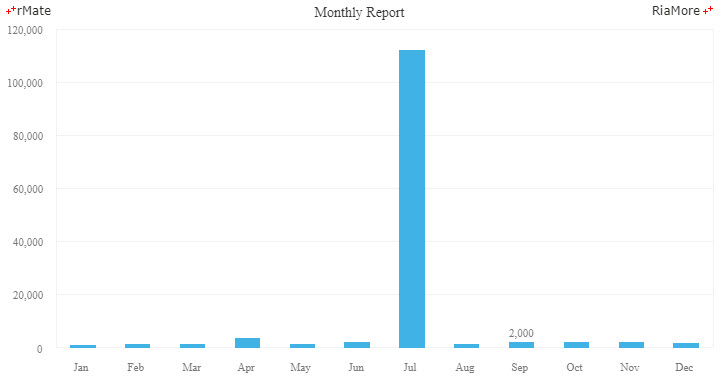
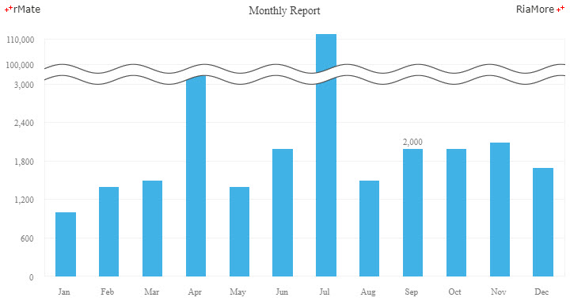
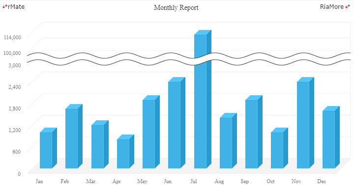
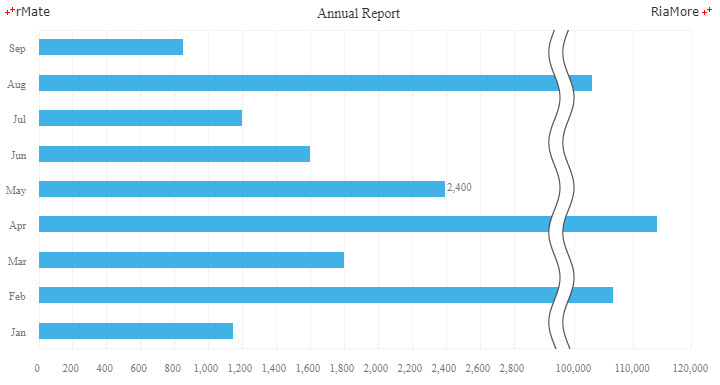
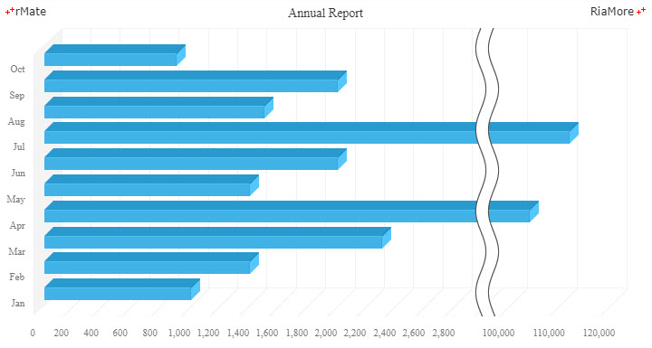
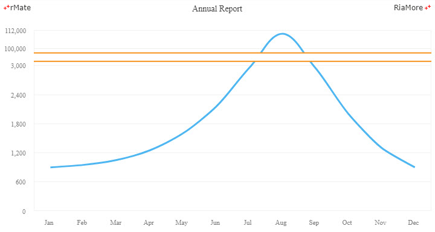

브로큰 축 차트
브로큰 축 차트는 데이터 시리즈를 구성하는 일부 데이터 값이 대부분의 데이터 값들과 편차가 심할 경우 활용됩니다.
데이터 값의 편차가 심한 경우에 일반적인 차트(컬럼 차트, 라인 차트 등)를 적용하면 편차가 심한 특정 데이터 때문에 나머지 대부분의 데이터들을 비교하기 어렵게 됩니다.
다음 예를 보십시요. 6월(Jun)을 제외한 나머지 데이터는 3,000 부근의 값이지만 6월(Jun)의 데이터 값은 110,000 을 넘습니다. 결과적으로 생성된 컬럼 차트에서는 6월을 제외한 나머지 달들의 데이터 값을 한눈에 비교할 수 없습니다.
<Column2DChart showDataTips="true" columnWidthRatio="0.5">
<horizontalAxis>
<CategoryAxis categoryField="Month"/>
</horizontalAxis>
<verticalAxis>
<LinearAxis id="vAxis" formatter="{numfmt}" />
</verticalAxis>
<series>
<Column2DSeries yField="Profit" labelPosition="outside" displayName="Profit" showValueLabels="[8]">
...
</Column2DSeries>
</series>
</Column2DChart>

See the CodePen 알메이트 차트 - 컬럼 차트 - 데이터 값의 편차가 심한 경우
브로큰 축 컬럼 차트
브로큰 축 컬럼 차트를 생성하기 위해서는 컬럼 차트 생성을 위한 레이아웃의 <verticalAxis> 속성에 <BrokenAxis> 노드를 정의합니다. 위 예에서 사용된 데이터 시리즈를 그대로 적용한 브로큰 축 컬럼 차트는 아래와 같습니다.
<Column2DChart showDataTips="true" columnWidthRatio="0.5">
<horizontalAxis>
<CategoryAxis categoryField="Month"/>
</horizontalAxis>
<verticalAxis>
<BrokenAxis id="vAxis" brokenMinimum="3000" brokenMaximum="100000" maximum="116000" brokenRatio="0.8" formatter="{numfmt}" />
</verticalAxis>
<verticalAxisRenderers>
<BrokenAxis2DRenderer axis="{vAxis}"/>
</verticalAxisRenderers>
<series>
<Column2DSeries yField="Profit" labelPosition="outside" displayName="Profit" showValueLabels="[8]">
...
</Column2DSeries>
</series>
</Column2DChart>

See the CodePen 알메이트 차트 - 브로큰 축 컬럼 차트
- 주의
- 주의
<BrokenAxis> 사용되는 주요 속성에 대한 설명은 다음과 같습니다.
| 속성명 |
유효값 (*: 기본값) |
설명 |
| brokenMaximum |
숫자
기본값: NaN
|
브로큰 축의 최대값(두 번째 물결무늬가 표시되는 축 상의 지점)을 지정합니다.
|
| brokenMaximumInterval |
숫자
기본값: NaN
|
브로큰 축의 최대값(brokenMaximum)보다 큰 값들이 축에 표시되는 간격을 지정합니다.
|
| brokenMinimum |
숫자
기본값: NaN
|
브로큰 축의 최소값(첫 번째 물결무늬가 표시되는 축 상의 지점)을 지정합니다.
|
| brokenMinimumInterval |
숫자
기본값: NaN
|
브로큰 축의 최소값(brokenMinimum)보다 작은 값들이 축에 표시되는 간격을 지정합니다.
|
| brokenOffset |
숫자
기본값: 14
|
두 물결무늬 사이의 간격을 지정합니다.
|
| brokenRatio |
0 과 1 사이의 숫자
기본값: 0.5
|
축의 시작 지점에서 브로큰 축의 최소값까지의 크기와 브로큰 축의 최대값에서 축의 끝 지점까지의 크기의 비율을 지정합니다.
|
브로큰 축 3D 컬럼 차트
3D 컬럼 차트에 브로큰 축 차트를 적용할 수 있습니다.
다음은 이에 대한 코드와 이를 적용해서 출력한 차트의 예제입니다.
<Column3DChart showDataTips="true" columnWidthRatio="0.5">
<horizontalAxis>
<CategoryAxis categoryField="Month"/>
</horizontalAxis>
<verticalAxis>
<BrokenAxis id="vAxis" brokenMinimum="3000" brokenMaximum="100000" brokenRatio="0.8" formatter="{numfmt}"/>
</verticalAxis>
<verticalAxisRenderers>
<BrokenAxis3DRenderer axis="{vAxis}"/>
</verticalAxisRenderers>
<series>
<Column3DSeries yField="Cost" displayName="Cost" />
</series>
</Column3DChart>

See the CodePen 알메이트 차트 - 브로큰 축 3D 컬럼 차트
브로큰 축 바 차트
브로큰 축 바 차트를 생성하기 위해서는 <BrokenAxis> 노드를 <horizontalAxis> 속성에 정의합니다.
다음은 이에 대한 코드와 이를 적용해서 출력한 차트의 예제입니다.
<Bar2DChart showDataTips="true" barWidthRatio="0.45">
<verticalAxis>
<CategoryAxis categoryField="Month"/>
</verticalAxis>
<horizontalAxis>
<BrokenAxis id="hAxis" brokenMinimum="3000" brokenMaximum="100000" brokenRatio="0.8" formatter="{numfmt}"/>
</horizontalAxis>
<horizontalAxisRenderers>
<BrokenAxis2DRenderer axis="{hAxis}"/>
</horizontalAxisRenderers>
<series>
<Bar2DSeries xField="Revenue" labelPosition="outside" displayName="Revenue" showValueLabels="[4]" outsideLabelYOffset="-2">
...
</Bar2DSeries>
</series>
</Bar2DChart>

See the CodePen 알메이트 차트 - 브로큰 축 바 차트
브로큰 축 3D 바 차트
3D 바 차트에 브로큰 축 차트를 적용할 수 있습니다.
다음은 이에 대한 코드와 이를 적용해서 출력한 차트의 예제입니다.
<Bar3DChart showDataTips="true">
<verticalAxis>
<CategoryAxis categoryField="Month"/>
</verticalAxis>
<horizontalAxis>
<BrokenAxis id="hAxis" brokenMinimum="3000" brokenMaximum="100000" brokenRatio="0.8" formatter="{numfmt}"/>
</horizontalAxis>
<horizontalAxisRenderers>
<BrokenAxis3DRenderer axis="{hAxis}"/>
</horizontalAxisRenderers>
<series>
<Bar3DSeries xField="Profit" displayName="Profit">
...
</Bar3DSeries>
</series>
</Bar3DChart>

See the CodePen 알메이트 차트 - 브로큰 축 3D 바 차트
브로큰 축 라인 차트
라인 차트에 브로큰 축 차트를 적용할 수 있습니다.
다음은 이에 대한 코드와 이를 적용해서 출력한 차트의 예제입니다.
<Line2DChart showDataTips="true">
...
<verticalAxis>
<BrokenAxis id="vAxis" brokenMinimum="3000" brokenMaximum="100000" brokenRatio="0.8" formatter="{numfmt}"/>
</verticalAxis>
...
<Line2DSeries yField="Revenue" displayName="Revenue" form="curve">
...
<annotationElements>
<BrokenAxisLine flatRatio="1" brokenAxisAreaColor="#ffffff">
<brokenAxisLineStroke>
<Stroke color="#f7921e" weight="2"/>
</brokenAxisLineStroke>
</BrokenAxisLine>
</annotationElements>
...
</Line2DChart>

See the CodePen 알메이트 차트 - 브로큰 축 라인 차트
물결무늬 설정
차트에 표시되는 물결무늬에서 물결 곡선의 정도와 선, 물결 사이의 공간에 칠해지는 색을 조절할 수 있습니다.
위에서 설명된 브로큰 축 라인 차트에서는 flatRatio 속성을 “1” 로 지정하여 물결무늬 부분이 직선으로 표현되었습니다.
이 작업은 <annotationElements> 속성에 <BrokenAxisLine> 노드를 정의함으로써 가능합니다.
<BrokenAxisLine> 노드에서 사용되는 주요 속성에 대한 설명은 다음과 같습니다.
| 속성명 |
유효값 (*: 기본값) |
설명 |
| brokenAxisAreaColor |
#16진수 컬러 코드 표기
기본값: #ffffff>
|
두 물결무늬 사이의 공간에 칠할 색을 지정합니다.
|
| brokenAxisLineStroke |
<Stroke>
|
물결무늬 선의 스타일을 지정합니다.
|
| direction |
horizontal(*), vertical
|
물결무늬 선이 그려질 방향을 지정합니다.
기본값은 “horizontal” 이고, 바 차트에서의 기본값은 “vertical” 입니다.
|
| flatRatio |
0 과 1 사이의 숫자
기본값: 0.2
|
물결무늬 곡선의 정도를 비율로 지정합니다.
값이 0 에 가까울 수록 곡선의 정도가 강해집니다.
|